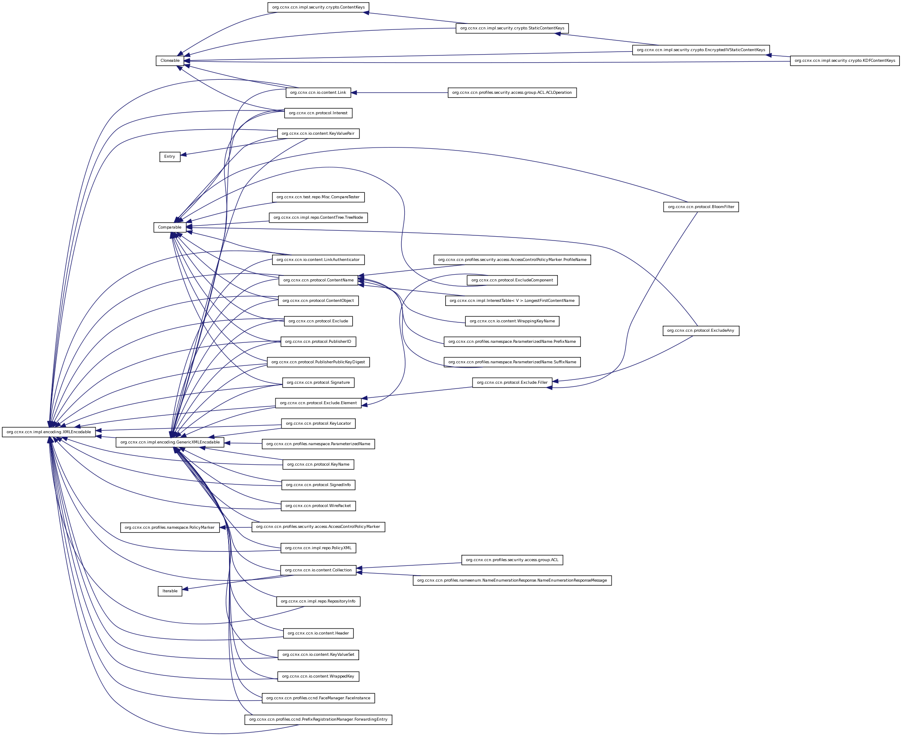
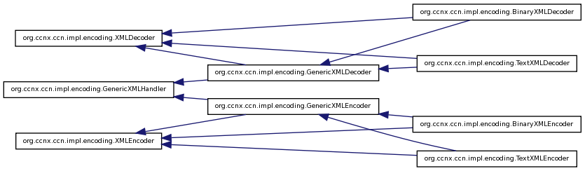
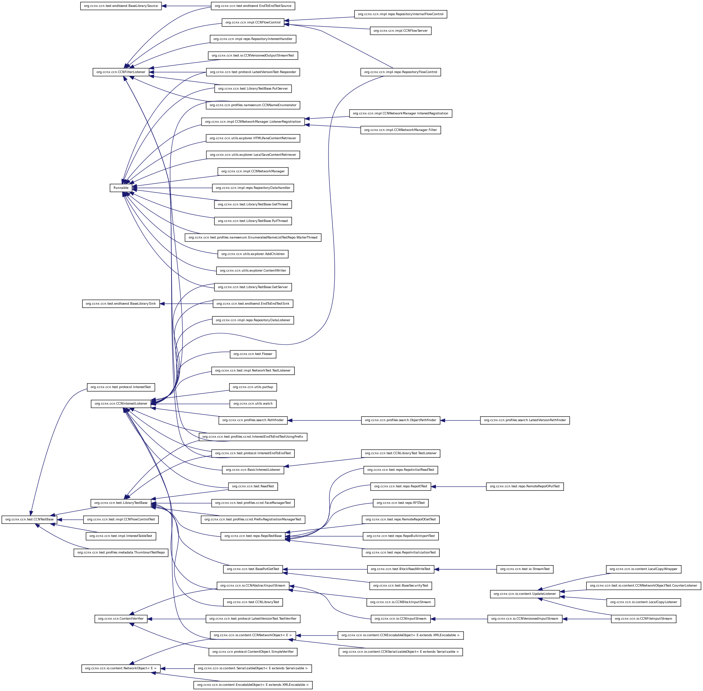
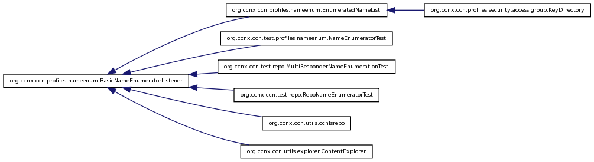

Main Page
Packages
Classes
Class List
Class Hierarchy
Class Members
Graphical Class Hierarchy
Go to the textual class hierarchy




Generated on Thu Nov 4 13:34:26 2010 for Content-Centric Networking in Java by
1.6.1


 1.6.1
1.6.1